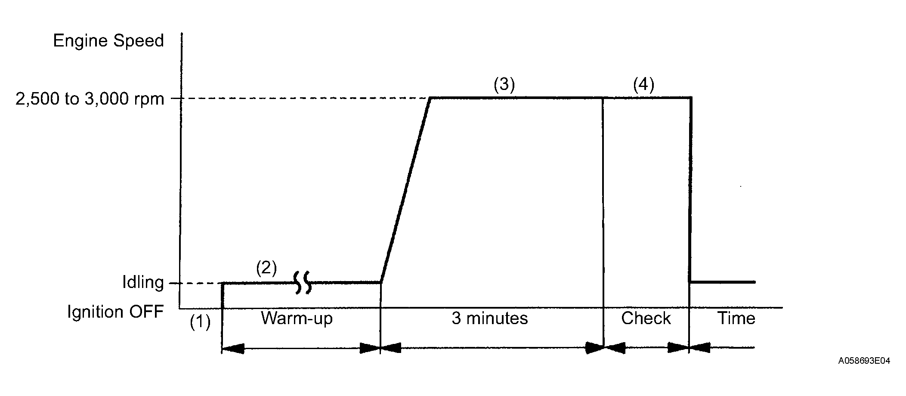
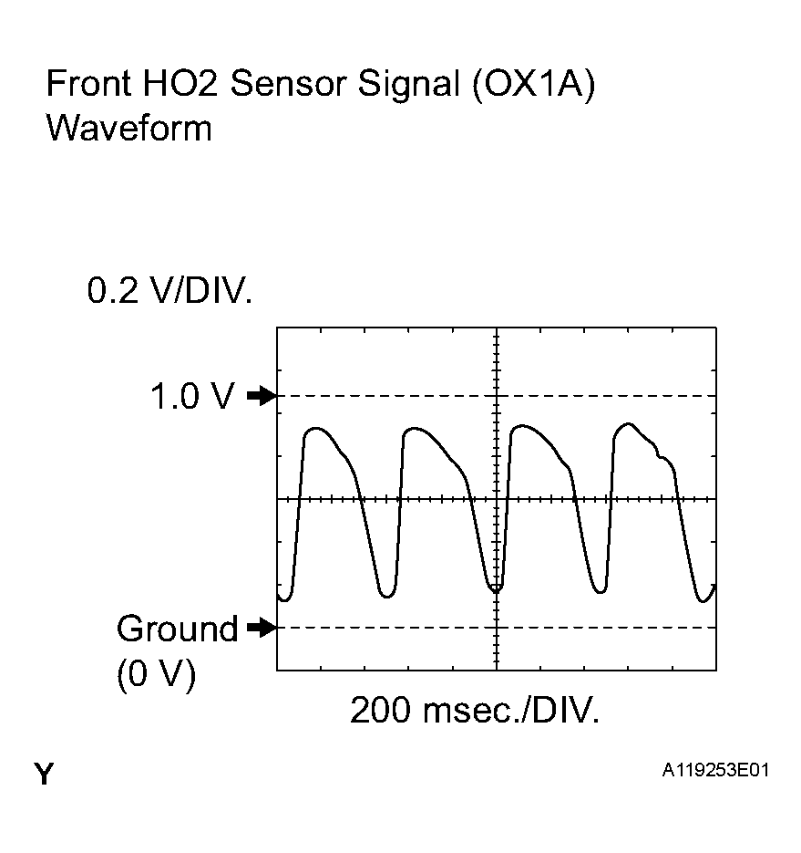

Confirmation Driving Pattern

Courtesy of © TOYOTA, LICENSE AGREEMENT TMS1002- If using the intelligent tester: Connect the intelligent tester to the DLC3.
- If not using the intelligent tester: Connect oscilloscope tester probes to terminals OX1A (front Heated Oxygen [HO2] sensor: Sensor 1), OX1B (rear HO2 sensor: Sensor 2) and E1 of the ECM connector.
- Start the engine.
- Warm up the engine with all the accessories switched OFF until the engine coolant temperature stabilizes.
- Run the engine at an engine speed between 2,500 rpm and 3,000 rpm for approximately 3 minutes.
- Check that the waveform of the OX1A (rear HO2 sensor) signal.

Courtesy of © TOYOTA, LICENSE AGREEMENT TMS1002HINT:
If there is still a malfunction in the system, the waveform of OX1B may become similar to the OX1A waveform shown in the diagram above.